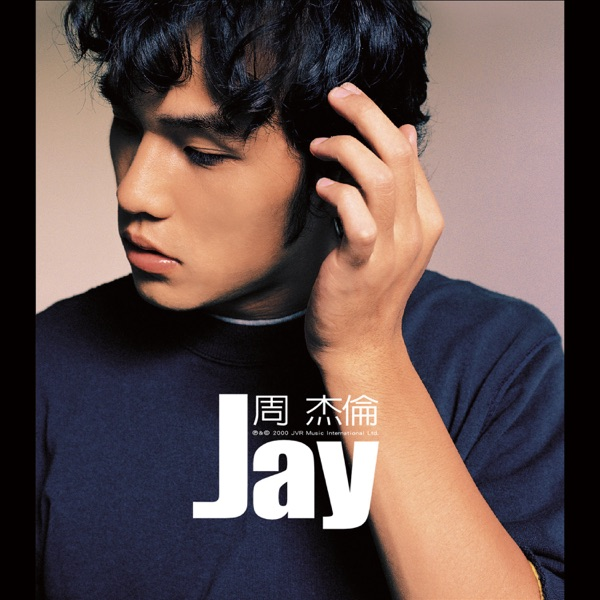
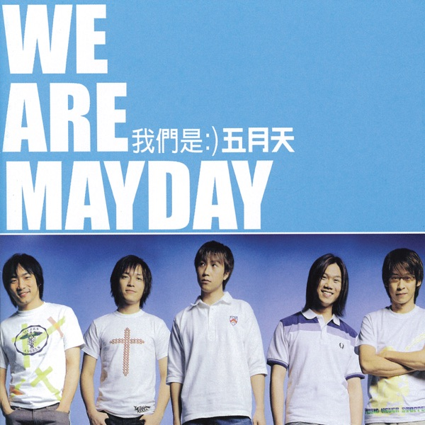
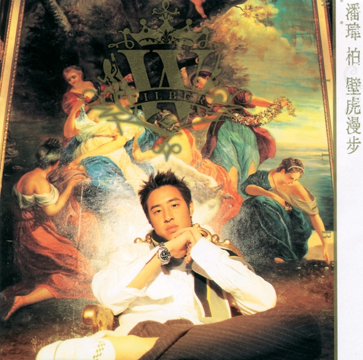
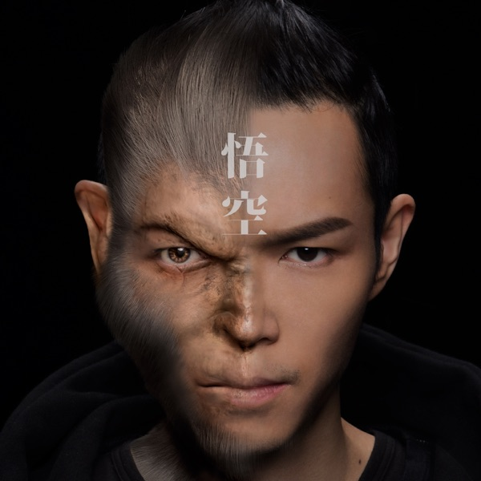
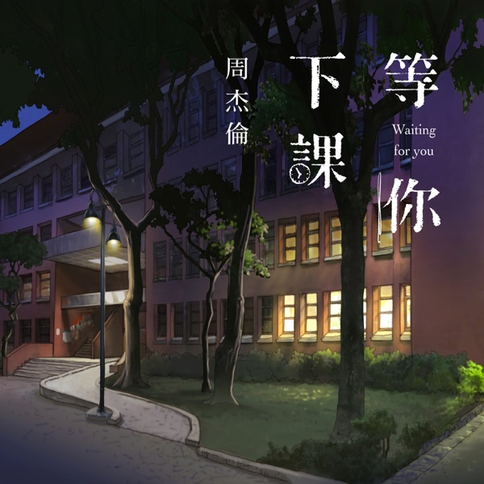
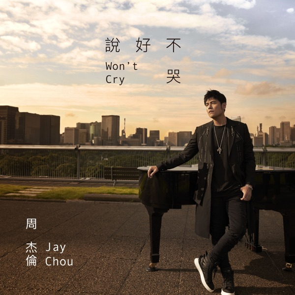
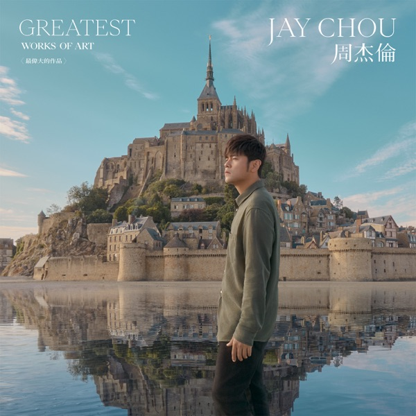

Love is Simple (爱很简单)
David Tao (陶喆)
1997 — Pioneered Chinese R&B with smooth vocals and jazz-influenced production.
Take a journey through the decades of Chinese pop music — from the roots of modern Mandopop to the sounds of today. Click any song to listen!
The late 1990s saw the birth of modern Mandopop. David Tao pioneered Chinese R&B, Stefanie Sun debuted to instant stardom, and Jay Chou's first album hinted at a revolution to come.
David Tao (陶喆)
1997 — Pioneered Chinese R&B with smooth vocals and jazz-influenced production.

David Tao (陶喆)
1999 — A breakout hit proving R&B could thrive in the Chinese market.
The early 2000s launched Mandopop's golden age. Jay Chou debuted and immediately redefined the genre, Stefanie Sun became a regional sensation, and JJ Lin arrived as a songwriting prodigy.

Jay Chou (周杰伦)
2000 — From Jay's debut album, introducing his signature blended style.

Stefanie Sun (孙燕姿)
2000 — Debut single that launched one of Mandopop's brightest stars.

Jay Chou (周杰伦)
2001 — Martial-arts themed hip-hop that became a cultural phenomenon.

Jay Chou (周杰伦)
2001 — One of Jay's most beloved ballads, a staple of Mandopop.

Stefanie Sun (孙燕姿)
2001 — An upbeat pop anthem that won Golden Melody Awards.

Wang Leehom (王力宏)
2001 — A timeless love ballad that became a wedding-song classic.

Eason Chan (陈奕迅)
2003 — One of the most iconic breakup songs in Mandarin music history.

Stefanie Sun (孙燕姿)
2003 — Film soundtrack that became a timeless anthem about fate and love.

JJ Lin (林俊杰)
2004 — A dreamy pop classic that cemented JJ Lin's status as a top artist.

Mayday (五月天)
2001 — The defining anthem of Taiwanese pop-rock that launched Mayday to stardom.

Wilber Pan (潘玮柏)
2002 — The debut rap single that introduced Wilber Pan's signature hip-hop style to Mandopop.
The late 2000s marked the creative peak of Mandopop's golden era. Jay Chou delivered masterpiece after masterpiece, Khalil Fong brought neo-soul to the scene, and a new internet music movement began with Vae (许嵩).

Jay Chou (周杰伦)
2005 — A dark, cinematic masterpiece blending classical piano with R&B.

Wang Leehom (王力宏)
2005 — The anthem of Leehom's East-meets-West fusion movement.

Khalil Fong (方大同)
2006 — Catchy soul-pop that introduced Khalil Fong to the mainstream.

Jay Chou (周杰伦)
2007 — "Chinese style" pop perfection — Vincent Fang's poetic masterwork.

Stefanie Sun (孙燕姿)
2007 — A deeply emotional ballad about longing and memory.

Jay Chou (周杰伦)
2008 — An uplifting anthem about returning to simple joys in life.

Jason Zhang (张杰)
2008 — A romantic ballad showcasing Zhang Jie's incredible vocal range.

Khalil Fong (方大同)
2009 — A tender, jazzy ballad from the acclaimed Timeless album.

Vae / Xu Song (许嵩)
2009 — Playful, warm hit that launched the internet music movement.

Vae / Xu Song (许嵩)
2009 — Poetic "Chinese style" indie track with classical imagery.

G.E.M. (邓紫棋)
2009 — A bilingual pop classic from G.E.M.'s debut era.

Vae / Xu Song (许嵩)
2009 — A poetic ballad blending ancient imagery with modern indie pop.
MC HotDog (热狗)
2007 — A satirical rap anthem about settling for "good enough" in life.
The early 2010s was defined by the rise of internet musicians — the "网络三巨头" (Internet Big Three): Xu Song (许嵩), Xu Liang (徐良), and Silence Wang (汪苏泷). Simultaneously, G.E.M. exploded onto the scene and legacy artists continued to deliver hits.

Vae / Xu Song (许嵩) ft. He Manting
2010 — A charming duet that became an anthem of the internet music era.

Silence Wang (汪苏泷)
2010 — A modern twist on a nursery rhyme that went mega-viral online.

Xu Liang (徐良) ft. Xiao Ling
2011 — The playful, quirky hit that defined Xu Liang's style.

Xu Liang (徐良) ft. Xiao Ling
2011 — An edgy, club-inspired track showcasing internet pop's range.

Eason Chan (陈奕迅)
2011 — An emotional exploration of loneliness and self-identity.

Silence Wang (汪苏泷)
2011 — First QQ Music #1 hit, a sweet campus love anthem.

G.E.M. (邓紫棋)
2012 — A soaring, emotional ballad that went viral on "I Am a Singer."

Silence Wang (汪苏泷) ft. BY2
2012 — Adorable three-way duet that became a KTV go-to.

JJ Lin (林俊杰)
2013 — A deeply emotional ballad about the journey of love.

JJ Lin (林俊杰)
2014 — Bittersweet reflection on missed chances in love.

Khalil Fong (方大同)
2014 — A heartfelt love song from the Dangerous World album.

Li Ronghao (李荣浩)
2014 — A catchy tribute to the Tang dynasty poet that went viral.
Streaming platforms reshaped the industry. G.E.M.'s "Light Years Away" went global, Jay Chou delivered viral romantic hits, Joker Xue's comeback went viral, GAI brought hip-hop mainstream, and Khalil Fong's "Monkey King" won the Golden Melody Award.

G.E.M. (邓紫棋)
2016 — Sci-fi pop anthem from the movie "Passengers," a massive global hit.

Khalil Fong (方大同)
2016 — Golden Melody Award-winning track from "JTW (Journey to the West)."

Jay Chou (周杰伦)
2016 — A romantic R&B confession song; 265M+ views on YouTube.

Jay Chou (周杰伦)
2018 — A nostalgic campus love song released on Jay's birthday.

Jay Chou (周杰伦) ft. Mayday Ashin
2019 — A tear-jerking duet that crashed music platforms on release.

Joker Xue (薛之谦)
2015 — The viral comeback hit that made Joker Xue a household name.

GAI (GAI周延)
2017 — The breakout hit from The Rap of China that brought Chinese hip-hop mainstream.
Mandopop continues to evolve with streaming virality and cross-cultural collaborations. Jay Chou's comeback album broke records, Eason Chan's "Gu Yong Zhe" went viral among children, and a new generation pushes boundaries.

Eason Chan (陈奕迅)
2021 — Theme for League of Legends "Arcane," a viral hit across all ages.

Jay Chou (周杰伦)
2022 — Jay's highly anticipated comeback blending art history with pop.
Li Ronghao (李荣浩)
2020 — A warm love letter to music itself, showcasing Li Ronghao's signature minimalist style.
Joker Xue (薛之谦)
2020 — A sweet, viral love song that dominated short-video platforms.
G.E.M. (邓紫棋)
2021 — A self-produced dance-pop anthem celebrating empowerment and independence.
Mayday (五月天)
2021 — An uplifting rock anthem about perseverance through uncertain times.